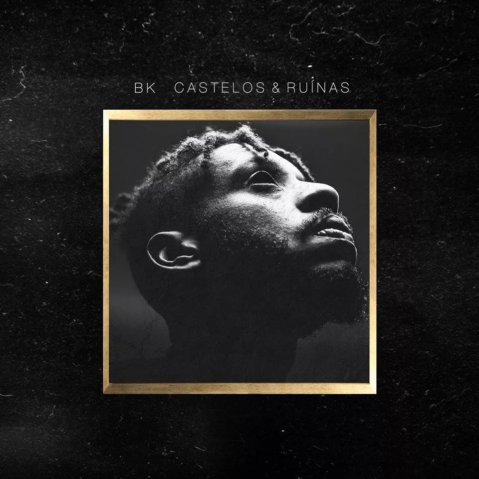
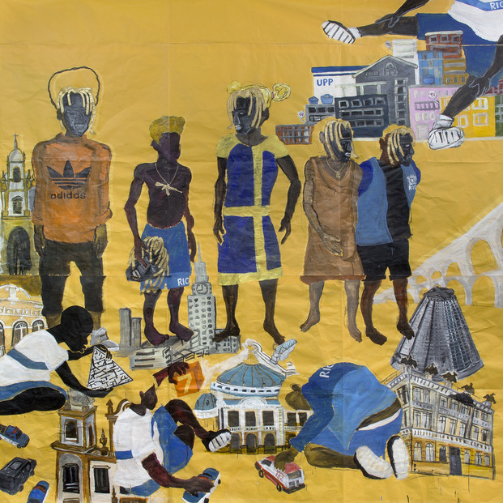
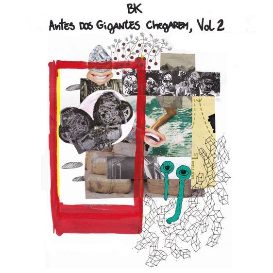

BK'
Abebe Bikila Costa Santos, 20 de março de 1989, mais conhecido como BK, é membro do grupo carioca Nectar Gang e também apresenta sólidos trabalhos solo. O rapper, que possui uma carreia anterior como videomaker, já foi considerado uma das grandes promessas da cena do Rap Nacional e cumpriu as expectativas, sendo um dos, senão o maior, destaque de 2016.
Sua Carreira
Em março de 2016, BK lançou seu álbum solo de estreia,
Castelos & Ruínas, alcançando grande aclamação do público e
conquistando diversos prêmios no cenário.
Um desses prêmios foi dado pela Red Bull, como o Melhor
Álbum Nacional de 2016. No Genius Awards não foi diferente,
BK foi o vencedor de todas as categorias nas quais concorreu:
música solo do ano e com participação, disco do ano, e por aí
vai. O rapper carioca fez barulho até na gringa, uma revista
digital de Portugal mencionou o C&R como um dos 5 melhores
discos de 2016.
Entretanto, BK não ficou em voga apenas pelo Castelos e
Ruínas, mas por ter feito uma participação icônica em dois
dos cyphers mais comentados de 2016, "Poetas no Topo" e
"Favela Vive 2".
Marechal não exagerou ao dizer, em sua inesperada faixa
"Primeiro de Abril", que BK era o futuro do rap. Seu trabalho
como MC o fortaleceu como um dos principais nomes e
referência da new school do Rap Nacional. Achou que
exageramos? Reclame com BK.
Menção à "Castelos e Ruínas"
Em Castelos e Ruínas, BK não quer só contar vantagem,
mas sim apontar os dois lados da moeda: "A intenção do
disco é mostrar desde quando está tudo muito bom, até quando
tá tudo ruim", conta BK via Whatsapp. Sem dúvida, este é o
disco mais introspectivo do rapper, uma vibe meio Earl
Sweatshirt, meio A$AP Mob. "Gosto muito dos dois. O Earl eu
acho foda, apesar de ser muito depressivo".
Com versos que oscilam entre a autoconfiança ("Se o gatilho
tá no meu porte eu aperto, não me arrependo") e a dúvida
("Uma enchente de pensamentos, e a minha alma transborda/Se
eu passar minha visão: quem que vai me entender?"), BK
aparece na famigerada crise existencial pela qual todo ser
humano passa uma hora ou outra: "Tu faz uns planos e as
paradas não rolam. Daí, você entra numa neura de 'caralho,
daqui a pouco tô fazendo trinta!". Amadurecer não é fácil.
BK' - Gigantes 
O primeiro single do trabalho, "Correria", foi lançado em
Agosto e teve um excelente clipe pelas lentes de Ronaldo
Land e Calebe Gomes, sem contar o roteiro do próprio BK'.
Produzido pelo selo Pirâmide Perdida, o disco conta com
instrumentais de El Lif Beatz, JXNV$, Nave e Arit, sem
contar a incrível arte de capa do artista plástico Maxwell
Alexandre. Também contando com a mixagem do indicado ao
Grammy, Arthur Luna e a masterização do produtor
internacional, Chris Gehringer.
O disco abre com a faixa, "Novo Poder", que é uma inicial e
agressiva faixa sobre domínio e retomada de poder em uma
nova era. Apesar de inicialmente lembrar o antecessor,
"Castelos & Ruínas", a abertura do disco ainda já mostra um
elemento novo, músicas cantadas em storytelling, que dão mais
liberdade ao artista para buscar várias visões e falar sobre
os mais variados temas.
YouTube
Antes dos Gigantes Chegarem Vol. 2 
Após liberar "Antes dos Gigantes Chegarem Vol. 1", BK'
retorna com a segunda parte de seu projeto, novamente
com 3 músicas, todas com videoclipe.
"Antes dos Gigantes Chegarem Vol. 2" conta com a
participação de Luccas Carlos, Juyè e Akira Presidente.
As faixas foram produzidas por El Lif e JXNVS. O EP antecede
o novo disco do rapper.
YouTube